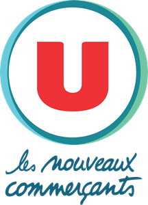
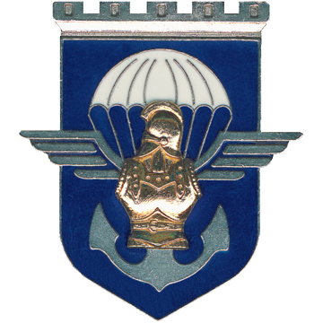

Expériences :
Stage Employé Commercial
Super U - Le Chesnay
2 mois - juin 2023 à août 2023
En tant qu'Employé commercial, j'ai intégré une équipe où j'ai eu la responsabilité d'un rayon auquel je devais faire de la mise en rayon, j'ai aussi contribué à faire de la préparation de commande, cette expérience m'a permis de développer mon sens du travail d'équipe et ma proactivité.
Stage Préparation Militaire Terre
17e Régiment du Génie Parachutiste - Montauban
1 semaine - juillet 2022
Semaine de découverte du métier de militaire, j'ai été dans la peau d'un militaire, munis d'un treillis, un camelbak (sac à dos), un FAMAS... Pour cette expérience j'ai dû faire initiative d'une grande rigueur, de plus le respect de la hiérarchie était quelque chose d'indéniable.
Bénévole
COP1 - Paris
Novembre 2022 - avril 2023
Distribution de denrées alimentaire et produits d'hygiène à destination d'étudiant en situation de précarité, cette expérience demande une grande organisation et un bon relationnel.